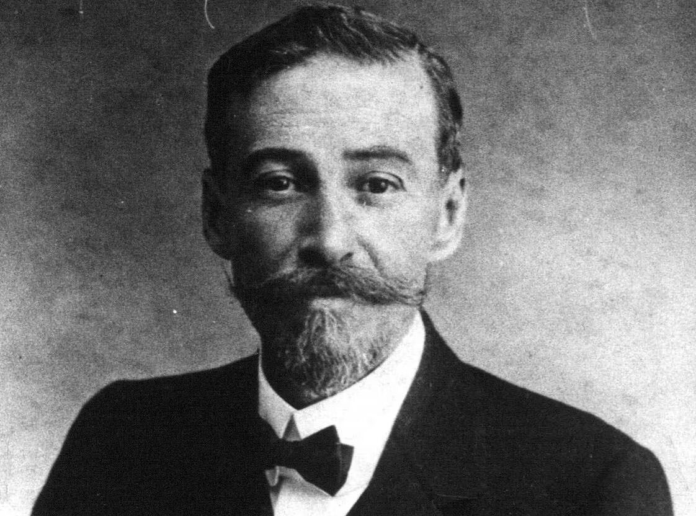

Vicente de Carvalho
1866 – 1924 • Santos, São Paulo, Brasil
Vicente Augusto de Carvalho foi um proeminente poeta, advogado, jornalista e magistrado brasileiro, amplamente conhecido como o "Poeta do Mar". Embora alinhado aos preceitos formais do Parnasianismo, sua obra se destaca por uma sensibilidade lírica singular e por uma temática marinha marcante. Foi ocupante da cadeira nº 29 da Academia Brasileira de Letras.
Principais Obras
Temas Recorrentes
O mar e as paisagens litorâneas, a busca inalcançável pela felicidade, a nostalgia, o amor sereno, a passagem inevitável do tempo e a contemplação bucólica da natureza.
Características de Escrita
Preserva o rigor métrico e o cuidado com a rima característicos do Parnasianismo, mas diferencia-se pela simplicidade vocabular e por um tom lírico mais afetuoso, fluido e comunicativo, aproximando-se da emoção humana sem perder a elegância formal.
Influências Artísticas
Inspirou-se nos modelos parnasianos e na tradição clássica, criando uma obra poética única marcada pelo fascínio pelo oceano e pela reflexão melancólica sobre a existência.
"Existe uma felicidade que se busca, / Mas que não se encontra nunca; e a vida passa / Como um barco que vai na maré baixa..."